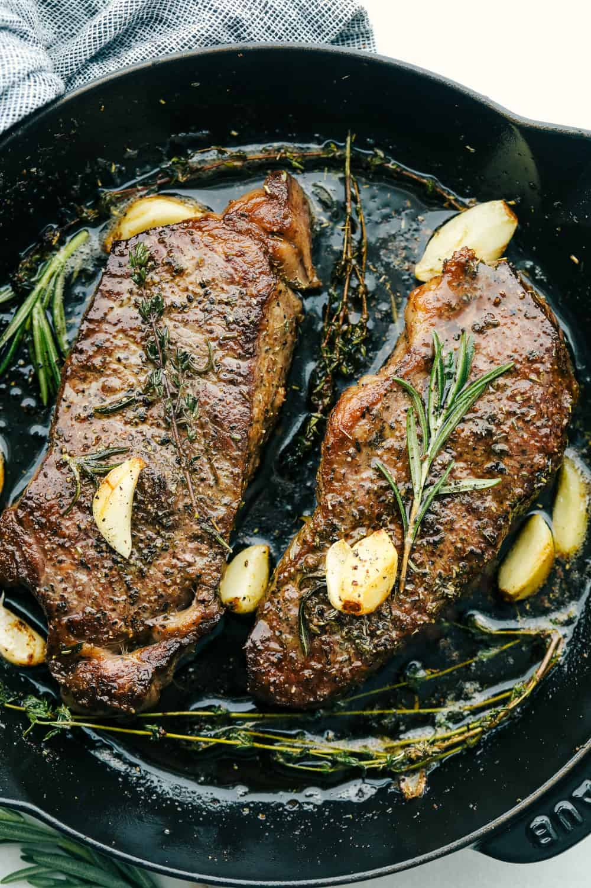

New York Steak Recipe

Photo of New York Steak
Description
The New York Steak is a great cut of meat with great marbling and
this line of fat, which when rendered deliveries intesnse flavor and juiciness.
The key to this dish is a quick sear. So make sure to have a heavy pan (cast iron is recommended) and
get it piping hot.
Ingredients
- 1 New York Strip steak
- 2 sprigs of Rosemary
- 3 cloves of garlic
- 3 Tablespoon of butter
Steps
- Generously season both sides of steak with salt and black pepper
- Heat skillet and add steak to sear
- Keep on one side for 3-6 minutes depending on desired wellness
- Flip over and add rosemary, garlic, and butter
- Base steak with infused melted butter until desired internal temperature is reached